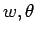
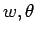

: プリミティブ方程式系と変形オイラー平均の復習
: NumRu::GPhys::EP_Flux で計算される緒量
: 質量流線関数
目次
EP_Flux モジュールでは与えられたデータに応じて
変数変換を施す場合がある. その変換は以下のように行う.
入力されるデータの鉛直軸が気圧軸であった場合,
以下の関係式を用いて高度軸に変換し, 計算を行う.
ここで は圧力, は地表面参考気圧(定数)である.
は圧力, は地表面参考気圧(定数)である.
入力が や
や でなく, 気温, 圧力「速度」
の場合はそれぞれを元に, を求める必要がある. 本モジュールでは以下の式
を用いてを求める.
でなく, 気温, 圧力「速度」
の場合はそれぞれを元に, を求める必要がある. 本モジュールでは以下の式
を用いてを求める.
|
 |
(2.14) |
|
|
(2.15) |
ここで , はそれぞれ乾燥空気の気体定数および定圧比熱である.
, はそれぞれ乾燥空気の気体定数および定圧比熱である.
Tsukahara Daisuke
平成17年2月19日